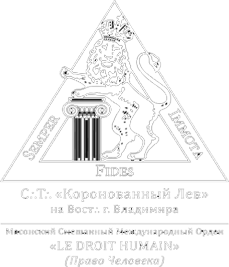

С этого времени во Владимире действует наш Символический Треугольник, который, как мы надеемся, однажды сумеет превратиться в полноценную мастерскую нашего Ордена. Более подробно о принципах этой масонской структуры и ее целях вы можете прочитать в интервью председателя Символического Треугольника.
Масонство во Владимире
Символический Треугольник "Коронованный Лев"

Начиная с февраля 2016 года, во Владимире действует наш Символический Треугольник, чье название заключило в себе символику славного города Владимир. Следует отметить, что начало наших работ стало символическим воскрешением масонства на владимирской земле после долгого перерыва. Известно, что в первой половине 70-х гг. XVIII в. здесь существовала Ложа под управлением Р.И. Воронцова. Чуть ниже вы найдете нашу краткую историю.
21 февраля 2016 г. состоялись торжественные работы Достопочтенной Ложи «Новый Свет» №1989 Масонского Смешанного Международного Ордена LE DROIT HUMAIN («Право Человека»), прошедшие на Востоке г. Владимира. В ходе работ была проведена церемония учреждения Символического Треугольника, получившего отличительный титул «Коронованный Лев». Досточтимый Мастер передал председателю Треугольника учредительную хартию, утвержденную Верховным Советом Ордена 24 января 2016 г. в Зените г. Парижа.
Также в ходе работ был представлен перевод исторического документа — речи Великого Мастера Ордена Мари-Жорж Мартен, произнесенной в 1908 г., на конвенте Ордена. Брат Председатель Символического Треугольника представил историческую зодческую работу, посвященную масонству XVIII века и особенностям «экосского» ритуала того времени. За ней последовали зодческие работы о ритуальных шагах ученической степени и символизме комнаты размышления, вызвавшие живой интерес и обсуждение среди присутствующих Сестер и Братьев. Работы завершились пятиминутным докладом, посвященным значению Слова в открытой Ложе. Затем состоялась братская агапа, во время которой все присутствующие Сестры и Братья обсудили развитие Ордена в России и искренне поздравили всех владимирских вольных каменщиков, выразив надежду на скорое учреждение в этом старинном городе Достопочтенной Ложи под сенью нашего Ордена.
1 октября 2016 г. состоялись торжественные работы Достопочтенной Ложи «Новый Свет» №1989, прошедшие на Востоке г. Владимира. Была проведена церемония Посвящения, в результате которой Символический Треугольник «Коронованный Лев» на Востоке г. Владимира обогатился двумя новыми Братьями. На работах присутствовал Брат Великой Символической и Традиционной Ложи «Опера», передавший братские приветствия от всех Братьев своей Мастерской. Братская агапа завершила этот насыщенный и значимый день.